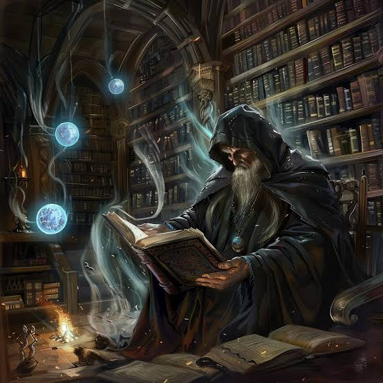
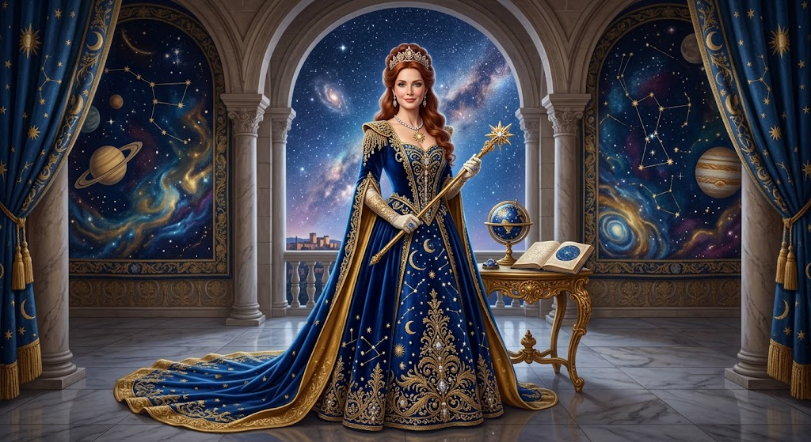
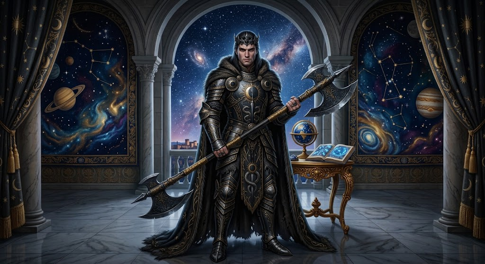
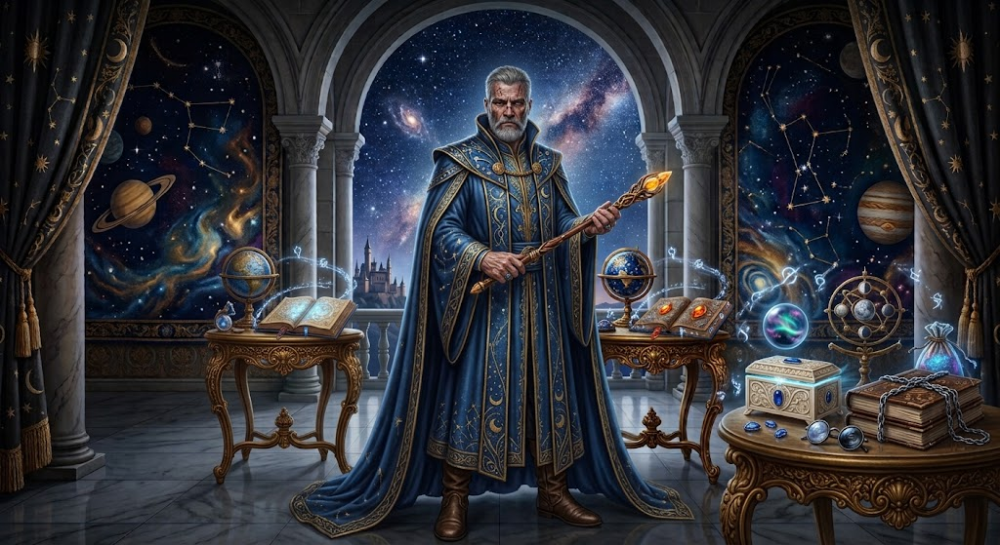
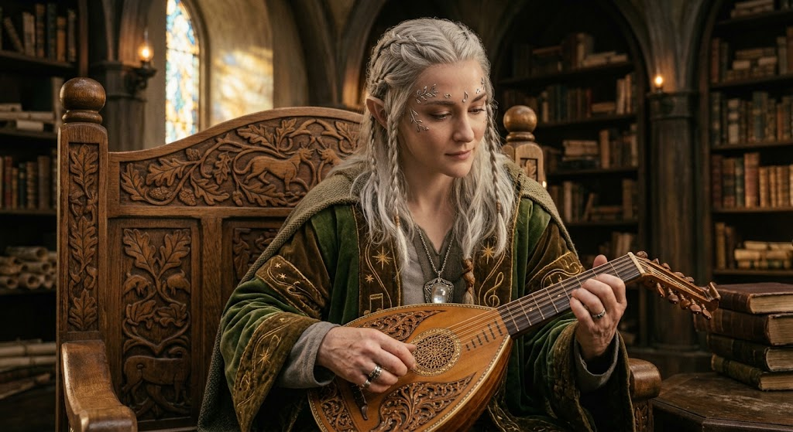
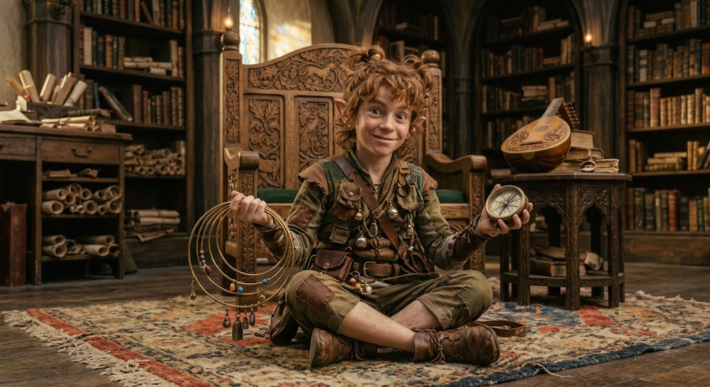

El Cónclave de la Tinta
Jerarquía y Altos Dignatarios del Gremio de Lectores

Aurelius Vane
Archimago del Códice SempiternoGuardián supremo de los tomos antiguos y custodio de la Gran Biblioteca del Gremio.
Fuerza: ???
Magia Arcana: ???
Sabiduría: ???
Nivel: Max (???)

Lady Elena Astralis
Heraldo de las Misiones DiariasAnuncia los Retos de Lectura Mensuales y encomienda aventuras roleras a los iniciados.
Carisma: ???
Lógica: ???
Nivel: ???

Thorne Shadowbane
Maestro Bestiario LiterarioPosee el conocimiento para doblegar a monstruos, tiranos y villanos de cualquier obra.
Agilidad: ???
Estrategia: ???
Nivel: ???

Bruno Markahierro
Forjador de ReliquiasArregla, forja y mecenas artefactos mágicos como marcapáginas arcanos y atriles de poder.
Forja: ???
Oficio: ???
Nivel: ???

Lyrandel Susurroviento
Custodio de Romances y MitosConoce todos los cuentos, líricas y leyendas jamás escritas. Puedes consultarle sobre cualquier relato.
Arte Lírico: ???
Lore: ???
Nivel: ???

Zephyr Compass
Trazadora de Reinos y PortalesDibuja los mapas de los nuevos mundos literarios que se descubren al abrir los portales de los libros.
Navegación: ???
Percepción: ???
Nivel: ???
Campeón del Gremio
Líder del Escalafón de AventurerosEl aventurero con mayor nivel y experiencia alcanzada en el Gremio.
Nivel: --
Puntos de Experiencia: --